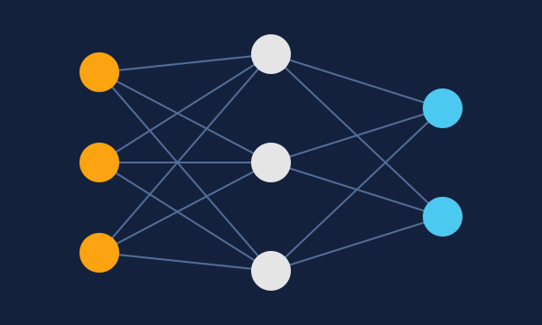
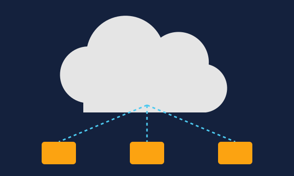
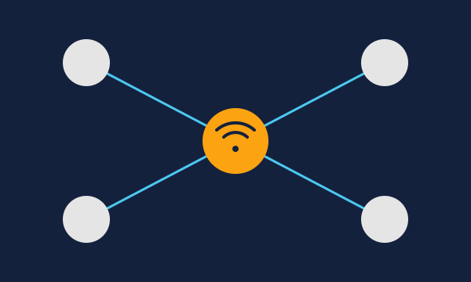

Inteligência Artificial

Sistemas que aprendem com dados para reconhecer padrões, tomar decisões e realizar tarefas que normalmente exigiriam inteligência humana.
Bem-vindo ao nosso site sobre tecnologias da área da informática. Aqui você encontrará informações sobre três tecnologias importantes que fazem parte do nosso dia a dia.

Sistemas que aprendem com dados para reconhecer padrões, tomar decisões e realizar tarefas que normalmente exigiriam inteligência humana.

Uso de servidores, armazenamento e programas pela internet, sem depender apenas dos recursos do computador de quem está usando.

Rede de objetos do dia a dia, como lâmpadas, relógios e eletrodomésticos, que têm sensores e se conectam à internet para trocar informações.
O HTML é importante porque organiza o conteúdo da página, definindo o que é título, parágrafo, lista, imagem e link. Com uma estrutura bem feita, o site fica mais claro, fácil de manter e mais acessível para quem usa leitores de tela. Já o CSS cuida da apresentação visual, como cores, fontes, espaçamentos e bordas, sem misturar isso com o conteúdo. Separar as duas partes permite mudar o visual de todas as páginas alterando um único arquivo, mantendo a identidade do site.